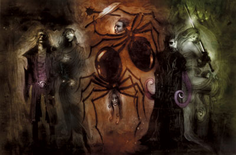
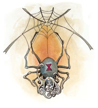

罗丝 Lolth（蜘蛛女神）

（左三）
黑暗精灵神系 中等神力
别称：蜘蛛神后 Queen of Spiders，深坑魔网女王 Queen of the Demonweb Pits
圣徽：自蛛网上垂下的黑色蜘蛛，头部为女性黑暗精灵

居住界域：深坑魔网 Demonweb Pits
阵营：混乱邪恶 CE
神职：暗杀 Assasins，混乱 chaos，黑暗 darkness，黑暗精灵 drow，邪恶 evil，蜘蛛 spiders
信徒：黑暗精灵，堕落的精灵，高智力的蜘蛛
牧师阵营：混乱中立 CN，中立邪恶 NE，混乱邪恶 CE
神域：混乱 Chaos，卓尔 Drow，邪恶 Evil，黑暗 Darkness，毁灭 Destruction，蜘蛛 Spider，诡术 Trickery
喜好武器：蜘蛛（匕首）A spider（dagger）
罗丝既残忍又反复无常，她可说是黑暗精灵那无可救药邪恶的集合体现。她对所有人都心怀恶意，觊觎着其它地表神祇的力量与信徒；她极擅长在战斗中使用各种污秽无情的手段。由于她故意让自己的信徒陷入无尽的内斗之中，使其为了权势互相残杀，因此有些人认为蜘蛛神后的心智早已扭曲失常。虽然她对自己（当下）喜爱的事物会显得十分亲切并给予许多援助，但她的力量终究是来自于死亡、毁灭、以及折磨－包括那些无法取悦自己的信徒的死亡、毁灭、与折磨。罗丝的真正形体是一 位人型大小、极度美艳的女性黑暗精灵，不过她也可用有着血红眼珠的巨大黑寡妇蜘蛛形象现身。
在地表世界中，有许多居民都听过关于蜘蛛神后 的恐怖传说，她也被视为是那些可怕卓尔的同义词。极少有地表精灵愿意提起这些地底的表亲，将这些堕落的弃民留给和他们一样腐败的黑暗神祇。唯有信奉伊莉丝翠（Eilistraee）的牧师愿意谈及罗丝－但这些信徒痛恨蜘蛛神后对自己同胞施加的奴役，其怒火甚至远比地表精灵还要炽烈。在幽暗地域中，她的教会 以各种邪行而恶名昭彰，矮人、地底侏儒、以及许多种族都深切痛恨她那些残酷的女祭司。许多信奉其它邪恶神祇的黑暗精灵（甚至包括许多对罗丝「效忠」的男性卓尔）都暗中咒骂蜘蛛神后教会所拥有的庞大力量－尽管他们自己也渴望同样的力量。
信奉罗丝的牧师（必定都是女性）在每天进入冥想状态 （trance，精灵的睡眠）之前或冥想之后祈祷以获得神术。罗丝要求自己的牧师们定期展现忠诚：在祈祷中宣誓服从，以及献祭。唯有献祭才能换取罗丝的神恩－通常祭品都是某位卓尔信徒或俘虏，以一把蜘蛛形状的匕首（八支脚向下延伸，聚合为锋锐的刀刃）饮用并泼洒祭品的鲜血。每当满月时，女祭司们都会在夜间 举行献祭仪式，杀害一位地表精灵，以之作为对莎罕妮（Sehanine，精灵神系的梦幻与死亡女神）－罗丝痛恨的宿敌－的公然亵渎。按照惯例，唯有女性得以参与在圣堂（或圣地）中举行的仪式，但当需要额外的蛮力或作为公开展示时则会在公开场合举行，且男性也会获准参加。至于那些最盛大的亵渎仪式从未见于任 何记载，也少有非卓尔的外族人得以目睹。礼赞罗丝的仪式包括了燃烧贵重的香油或熏香、活体献祭、以及奉献各种的财宝（尤其是宝石）。按照惯例，女祭司们会在黑色祭坛上放置一个火盆，将各种祭品投入黑红色的跃动火焰之中。假如神祇感到不悦（或现场有任何假冒的信徒），黑红色的火焰甚至会跳出火盆吞噬其它物体 －比如魔法物品、珠宝、以及衣物。较大型的重要仪式按例都会摆放八个火盆以提供更多火源－并彰显罗丝的八只脚。
唯有当罗丝感到愉悦时，才 会允许信徒对她进行直接的沟通（比如「通神术」，commune）－在一般的情况下，此类呼唤只能得到蜡融妖（yochlol，原形无定状的妖魔，可变身为精灵或蜘蛛的外型）的回应。当罗丝感到不悦时，她甚至会派遣蜡融妖或噬魂蛛（myrlochar，较低等的蜘蛛恶魔）前来袭击该位牧师。信奉罗丝的牧师 有时会兼职成为蛛后侍者（Arachne）、战士、或是术士。
历史/与众神的关系 History/Relationship：
罗 丝原名艾罗希涅（Araushnee），是柯瑞隆˙拉瑞辛（Corellon Larethian）的妻子，她那时是艺术家的守护神、掌管着精灵们的命运，后来（在柯瑞隆的命令之下）守护着那些同样拥有黑玉般美丽肌肤的精灵子民们。命运编织者（the Weaver of Destiny，艾罗希涅的别称）为她的丈夫生下了两个孩子－维伦（Vhaeraun）与伊莉丝翠。但她后来背叛了柯瑞隆，并试着伙同关纳德（Ghaunadaur，软泥怪之神）、马拉（Malar）等一众邪恶神祇攻击阿泛铎国度（Arvandor，精灵众神居住所在）。为了惩罚她的罪愆，艾 罗希涅被化为蜘蛛恶魔，并放逐至无底深渊（Abyss）之中，她在那儿改称自己为罗丝。由于原本就是黑暗精灵的守护女神，因此罗丝在黑暗精灵神系中迅速地建立起牢不可破的统治地位。她偶尔会为了利益而暂时与劳微塔（Loviatar，折磨女神）或马拉暂时结盟。在动荡时期（Time of Trouble）之后，她开始假冒摩安达（Moander）－掌管腐化、腐朽、腐败的古老神祇－的名号吸收信徒。她的仇敌包括席德瑞恩众神（Seldarine，即精灵众神）关纳德、伊莉丝翠、格努须（Gruumsh）、以及其它不属卓尔神系的幽暗地域神祇。
教义 Dogma：
谨 记－恐惧是比钢铁还要强大的工具，爱与尊敬都是既软弱又无用。汝当使其它异教徒卓尔皆前来信奉罗丝－无可救药者便加以摧毁。汝当淘汰那些弱者与心怀二意之 人，摧毁那些胆敢亵渎蜘蛛神后的罪人。汝当将所有违抗蜘蛛神后与其女祭司号令的男性、奴隶、与其它种族之人皆献祭予蜘蛛神后。汝当从小教育孩童，使其知晓应当礼赞并畏惧罗丝。每个家族至少都必须有一位侍奉蜘蛛神后的女祭司。凡质疑罗丝的动机与睿智、帮助非卓尔的外族人对抗卓尔、甚或为了愚蠢的爱情反抗罗丝 的命令，这些都是不可饶恕的罪行。汝当敬重所有种类的蜘蛛，胆敢杀害或虐待蜘蛛者只有死路一条。
牧师与神殿 Clergy & Temples：
罗 丝的女祭司们是卓尔社会中的统治者、审判者、执法力量、也是处刑者。这些掌控力量的女祭司们和她们的女神一样地残忍又反复无常，也常借着残暴的力量操纵自 己的追随者，让其逐渐地变得与女神一样邪恶。每一位女祭司最关切的事都是设法获取（并维持）罗丝的宠爱，她们深信受女神眷顾的灵魂死后将能前往深坑魔网，以蜡融妖（或其它生物）的型态为女神服务；而辜负罗丝者死后会在另一个界域永受折磨（这些不幸的灵魂或许某天能重回费伦，转生成蛇或蜘蛛－关于这方面的谣 传常随时间地点不同而有多种版本）。虽然她常奖励信众们的背叛与残酷，但她也不会善待那些因个人忌妒或私仇而使整个家族、氏族、城市、团队蒙羞或落败的个体。
每个黑暗精灵的家族都有自己专属的神殿，而每个由罗丝教会统治的城市至少都会有一块大型的公开集会区域，以进行大型仪式、或因应战争 需要集结部队。此外，大多数的城市也会有一所蜘蛛神后的教院，以训练新进女祭司。除了规模大小、奢华程度、与重要性或许各有不同之外，每一座罗丝的神殿之间都有许多类似而固定不变的特征。比如说，内厅是用来对罗丝进行礼拜与其它相关事务之用（大多是施展法术），这些厅堂一向都笼罩在黑暗之中，唯有当施展法 术或进行献祭时才会出现光亮。前厅则是用来召开作战会议与其他日常事务之用－比如女祭司们接见男性或其它外来者。大多数的神殿都会饲有充当守卫的生物，大多是躲在暗处、拥有某些魔法特质的各种蜘蛛。所有的神殿厅堂内都一定会摆放罗丝的小型圣像（大多以黑色岩石雕成）。当制作雕像与各种神殿器具时，黑曜石与 黑色大理石都是黑暗精灵们爱用的材质。此外，神殿内必定会有一具大型的火盆、一座以黑色石材雕成的祭坛、以及各种蜘蛛风格的奢华雕饰。
当 进行献祭时，罗丝的女牧师们通常都赤身裸体，或穿着镶紫或暗红边黑色长袍（低阶或平民女祭司则穿着镶黑边的深紫或暗红色长袍）。有些城市的女祭司们还会戴 上华丽的头盔，其上雕饰着许多扭曲的蜘蛛。此外，她们还会在白金或秘银炼甲衫上佩带白金制（且镶满宝石）的徽章－至少直径三吋的白金制罗丝圣徽，其上有着黑色珐琅或白金的浮雕。
罗丝的教会内部可说是极度的混乱，少有正式的神职阶层体系－一切皆由强大的成员们掌权、且随女神的旨意（随时都可 能）有所变更。在那些蜘蛛神后女祭司们所统治的城市（比如传说中的魔索布莱城，Menzoberranzan），高阶的女祭司们也同时是强大家族的领导者，她们共同组成执政议会，统由第一家族的主母领导；而在其它的城市中，或许就只有单一家族（与单一位主母）独揽大权。大多数情形下，一座城市中的神职阶 层体系划分必然与该城市的政治现状密不可分。
罗丝的化身 Lolth's Avatar：
罗丝常派遣自己的化身四处去审查女祭司是否仍然忠诚，或是派去威吓自己的仇敌。
--
资料来源：费伦大陆信仰与神系《Faiths & Pantheons》
译者：一凡